Open WebUI
คุยกับโมเดลภาษา ไม่สร้างไฟล์ภาพ
คนละระบบกับ Open WebUI และ Hermes ไม่ใช้คำสั่ง start-qwen35 หน้านี้สอนจากหน้าจอจริงบนเครื่องนี้ ทั้งภาพนิ่งและคลิปสั้น
แชทพิมพ์ข้อความแล้วได้ข้อความ ComfyUI ต่อกล่องงานเป็นกราฟ แล้วกด Run เพื่อได้ไฟล์รูปหรือคลิป
คุยกับโมเดลภาษา ไม่สร้างไฟล์ภาพ
ข้อความเป็นรูป หรือแก้รูปเดิม ได้ไฟล์ใน output
ได้คลิปสั้น ใช้ RAM มากกว่าภาพมาก
| สิ่งที่ต้องการ | อยู่ที่ไหนบนเครื่องนี้ |
|---|---|
| โมเดลภาพและวิดีโอ | ~/ai/comfyui/models |
| รูปหรือคลิปที่เอาเข้าไปใช้ | ~/ai/comfyui/input |
| ผลที่สร้างได้ | ~/ai/comfyui/output |
| ไฟล์กราฟ .json | ~/ai/comfyui/workflows |
| โหนดเสริม | ~/ai/comfyui/custom_nodes |
ตรวจจากระบบจริง วันที่ 17 สิงหาคม 2026
comfyui-dgx เปิดอยู่ พอร์ต 8188 ตอบ HTTP 200NVIDIA GB10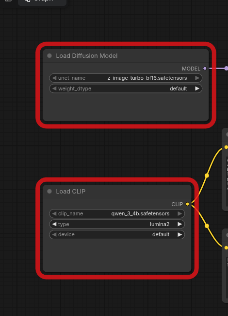
ทำบนเครื่อง DGX ผ่านเทอร์มินัล ไม่ใช่ในกรง Hermes
กด Ctrl + Alt + T
docker ps --filter name=comfyui-dgx
ถ้า STATUS เป็น Up ... ไปขั้นที่ 2 ได้เลย
~/ai/comfyui/scripts/start.sh
คำสั่งนี้ปลุกคอนเทนเนอร์เดิม ถ้ายังไม่มีจะสร้างใหม่โดยไม่แตะโมเดลแชท
docker logs --tail 30 comfyui-dgx
ต้องเห็นข้อความประมาณ To see the GUI go to: http://0.0.0.0:8188
stop-model ก่อน เพราะเครื่องนี้ RAM รวมกับ GPU ก้อนเดียวบนเครื่องนี้: http://127.0.0.1:8188
จากเครื่องอื่นในบ้าน: http://192.168.178.98:8188
ต้องเห็นผืนผ้าใบสีเข้ม แถบซ้ายมี Assets / Nodes / Models / Workflows / Templates และมุมบนมีปุ่มฟ้า Run
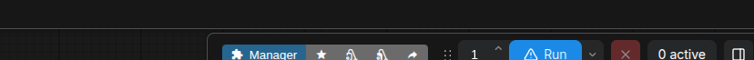
ใช้เวลาจำปุ่มเหล่านี้ก่อนลงมือ ภาพด้านล่างคือหน้าจอจริง
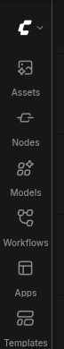
| ส่วนของหน้าจอ | ทำอะไร | ใช้ตอนไหน |
|---|---|---|
| Assets | ไฟล์ที่สร้างแล้ว | ดูผลหลังกด Run |
| Nodes | กล่องงานทั้งหมด ลากมาวางได้ | สร้างกราฟเอง |
| Models | คลังไฟล์ใน ~/ai/comfyui/models | ตรวจว่าวางโมเดลถูกช่อง |
| Workflows | กราฟที่เซฟไว้ | เปิดงานเดิม |
| Templates | กราฟตัวอย่าง Image / Video / Audio | เริ่มงานใหม่โดยไม่ต่อเอง |
| Manager | ติดตั้งโหนดหรือโมเดลเพิ่ม | เมื่อกราฟขอโหนดที่ยังไม่มี |
| Run | เริ่มสร้างตามกราฟ | เมื่อไม่มีกรอบแดง |
| 0 active | จำนวนงานในคิว | ดูว่ารันอยู่หรือเสร็จแล้ว |
| กรอบแดง | โหนดนั้นยังไม่มีไฟล์ | ห้ามกด Run |
กด Space ค้างแล้วลากเมาส์
หมุนลูกกลิ้งเมาส์
ดับเบิลคลิกพื้นที่ว่าง แล้วพิมพ์ชื่อ เช่น KSampler
คลิกแล้วกด Delete
Ctrl + S
ปุ่มฟ้า Run หรือ Ctrl + Enter
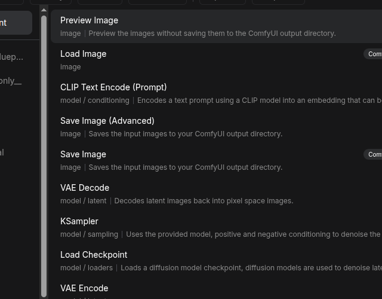
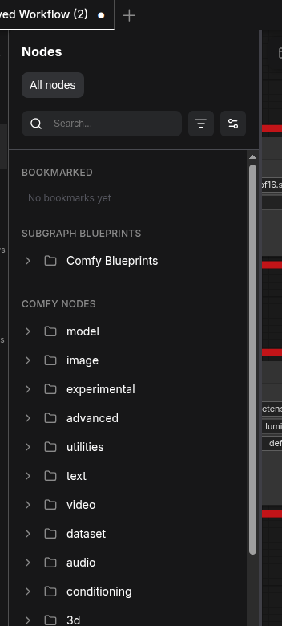
กราฟทำงานได้เมื่อต่อขั้วถูกสี จุดกลมขอบโหนดคือขั้ว ลากจากจุดออกไปจุดเข้าสีเดียวกัน
Load Diffusion Model ไปเข้า KSampler
Load CLIP ไปเข้าพรอมต์บวกและลบ
ภาพว่าง ไปเข้า KSampler แล้วออกไปถอดรหัส
VAE Decode ไปเข้า Save Image หรือโหนดวิดีโอ
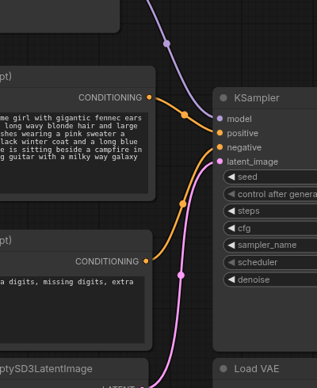
ComfyUI ไม่ได้ดาวน์โหลดโมเดลใหญ่ตอนติดตั้ง ตอนนี้ทุกโฟลเดอร์ใน ~/ai/comfyui/models ยังว่าง
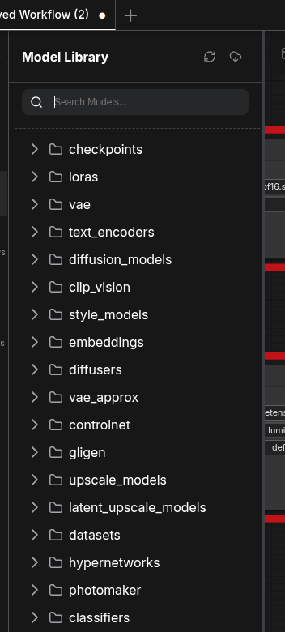
| ชนิดไฟล์ | วางที่ | ใช้กับงาน |
|---|---|---|
| Checkpoint แบบเก่า เช่น SD 1.5 | models/checkpoints | ภาพทดสอบเล็ก |
| Diffusion ใหม่ เช่น Z-Image, FLUX, Wan | models/diffusion_models | กราฟเริ่มต้นและวิดีโอ |
| Text encoder / CLIP / T5 / Qwen | models/text_encoders หรือ clip | อ่านพรอมต์ |
| VAE | models/vae | ถอด latent เป็นรูป |
| อัปสเกล | models/upscale_models | ขยายภาพทีหลัง |
| น้ำหนัก RIFE | ตามที่โหนด Frame Interpolation บอก | เพิ่มเฟรมวิดีโอ |
xdg-open ~/ai/comfyui/models
docker restart comfyui-dgx
docker exec -it comfyui-dgx hf auth login แล้ววาง token ในช่องที่ถามเครื่องนี้เปิดมาพร้อมกราฟ Z-Image-Turbo ไม่ต้องสร้างกราฟใหม่สำหรับงานแรก
Load Diffusion Model ต้องการ z_image_turbo_bf16.safetensors ประมาณ 11.46 GB
Load CLIP ต้องการ qwen_3_4b.safetensors ประมาณ 7.49 GB
มุมขวาบนมีป้าย errors ให้กด View details แผงขวาจะขึ้น Missing Models
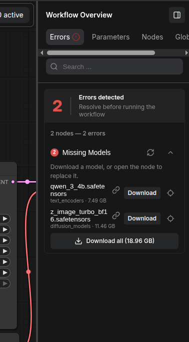
กด Download ทีละไฟล์ อย่ากด Download all ตอนโมเดลแชทยังกิน RAM
ไฟล์ตกที่ diffusion_models และ text_encoders แล้วรีเฟรชโหนด
คลิกโหนด CLIP Text Encode อันบน แล้วพิมพ์ใหม่ที่แผงขวาช่อง text ช่องล่างเป็นพรอมต์ลบ
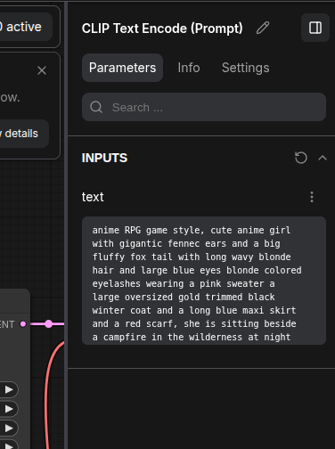
โหนด EmptySD3LatentImage ตอนนี้ 1024×1024 งานแรกให้ลดเป็น 768×768
KSampler ของกราฟนี้ใช้ steps 8, cfg 1.0, sampler res_multistep เหมาะกับ Z-Image-Turbo อยู่แล้ว อย่าเพิ่ม steps มากในรอบแรก
ปุ่มฟ้ามุมบน หรือ Ctrl + Enter ตัวเลข 0 active จะขยับขึ้นขณะทำงาน
รูปโชว์ที่โหนด Save Image และไปอยู่ที่ ~/ai/comfyui/output ในเว็บดูได้ที่ Assets
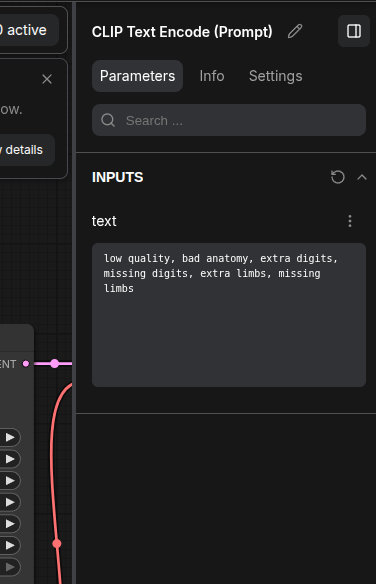
ใช้เมื่ออยากเริ่มจากเทมเพลต ไม่ใช้กราฟที่เปิดมา ถ้ายังไม่มีโมเดล ทำได้ถึงแค่เปิดเทมเพลต แล้วโหนดโหลดจะแดง
จะได้หน้าต่าง All Templates

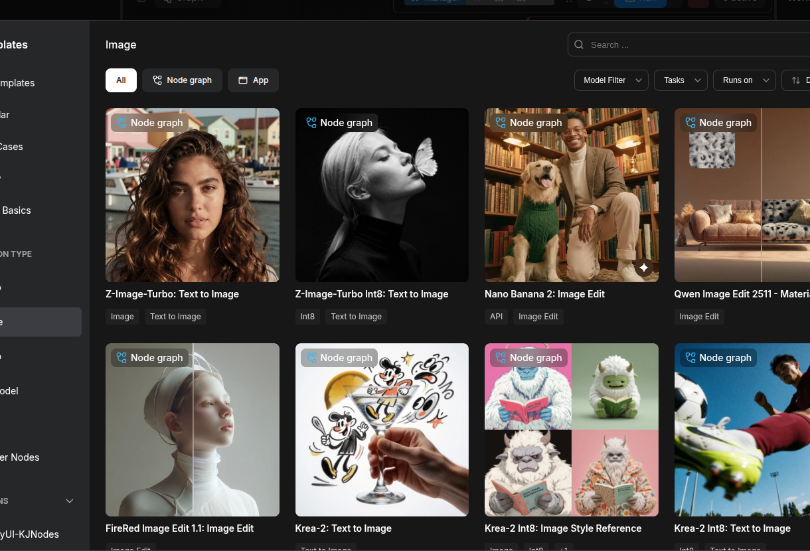
คลิก Z-Image-Turbo: Text to Image หรือเทมเพลตภาพอื่นที่ไฟล์มีครบ
SD 1.5 ใช้ Load Checkpoint ใน checkpoints ส่วน Z-Image / FLUX / Wan ใช้ Load Diffusion Model ใน diffusion_models
a ceramic coffee cup on a teak table, morning window light, photorealistic, 35mm
ช่องลบใส่สิ่งที่ไม่ต้องการ เช่น blurry, watermark, extra fingers
ใช้เมื่อมีรูปต้นทางแล้วอยากเปลี่ยนบางอย่าง ไม่ใช่สร้างใหม่ทั้งใบ
คัดลอก .png หรือ .jpg ไปที่ ~/ai/comfyui/input
xdg-open ~/ai/comfyui/input
Templates → Image → Qwen Image Edit 2511 เมื่อมีไฟล์ของกราฟนั้น
ตัวอย่าง: เปลี่ยนพื้นหลังเป็นห้องครัว แต่คงถ้วยกาแฟเดิม
ค่า denoise ยิ่งสูง ยิ่งทิ้งต้นฉบับมาก รอบแรกอย่าขยับสุด
วิดีโอคนละกราฟกับภาพนิ่ง ใช้เวลานานกว่า และกินหน่วยความจำมากกว่ามาก
ตัวที่เหมาะเริ่มต้นคือ Wan2.2 TI2V-5B ทำได้ทั้งข้อความเป็นวิดีโอและภาพเป็นวิดีโอ ดูขนาดในตารางโมเดลด้านล่าง
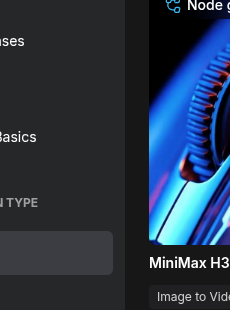
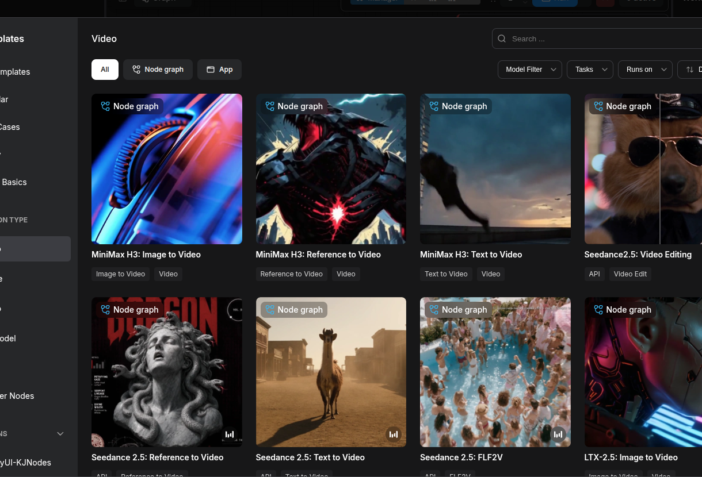
ใช้ไฟล์ UI เท่านั้น อย่าเปิดไฟล์นามสกุล .api.json
slow drone shot over a misty teak forest at sunrise, cinematic, gentle camera push-in
ถ้าระบุแค่วัตถุโดยไม่บอกกล้อง คลิปจะนิ่งเหมือนสไลด์
เป้าหมายแรกประมาณ 49–81 เฟรม ที่ 16–24 fps จะได้คลิปราว 3–5 วินาที
stop-model
ผลมักอยู่ที่ ~/ai/comfyui/output บางกราฟได้ .webp ก่อน แปลงเป็น mp4 ได้ด้วย
docker exec comfyui-dgx ffmpeg -y -i /opt/ComfyUI/output/ชื่อไฟล์.webp /opt/ComfyUI/output/ชื่อไฟล์.mp4
ใช้เมื่อมีรูปที่ชอบแล้วอยากให้ขยับ ไม่ใช่สร้างคลิปจากข้อความล้วน
ใช้รูปจากขั้นสร้างภาพ หรือรูปถ่ายของคุณเอง
เลือกกราฟที่ตรงกับโมเดลที่มี เช่น Wan เมื่อไฟล์ครบ
เขียนว่ากล้องทำอะไรและวัตถุขยับอย่างไร เช่น กล้องค่อย ๆ เข้าใกล้ ไอน้ำลอยขึ้น ใบไม้สั่นเล็กน้อย
ทำทีหลังเมื่อมีไฟล์ผลแล้ว อย่าขยายพร้อมกับสร้างครั้งแรก
~/ai/comfyui/models/upscale_modelsโหนด RIFE VFI ติดตั้งแล้ว แต่ยังต้องมีไฟล์น้ำหนัก RIFE
ls -lt ~/ai/comfyui/output | head xdg-open ~/ai/comfyui/output
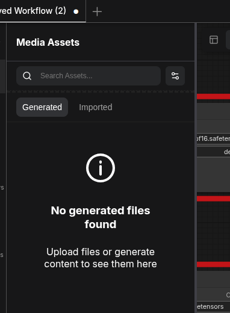
กด Ctrl + S หรือเมนู Graph แล้ว Save ตั้งชื่อให้อ่านรู้เรื่อง เช่น 01_text_to_image.json 03_image_to_video.json
ไฟล์จะโผล่ใน ~/ai/comfyui/workflows
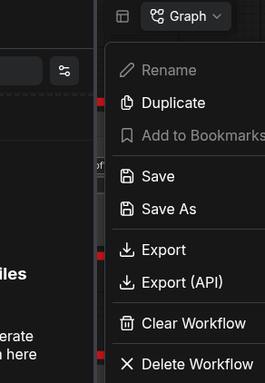
เก็บที่ ~/ai/comfyui/custom_nodes ไม่ต้องลงซ้ำ
| ชื่อ | หน้าที่ | ใช้ตอนไหน |
|---|---|---|
| ComfyUI-Manager | ติดตั้งโหนดและโมเดล | กราฟขอโหนดที่ยังไม่มี |
| ComfyUI-VideoHelperSuite | โหลด บันทึก รวมวิดีโอ | ทุกงานคลิป |
| ComfyUI-KJNodes | โหนดช่วยวิดีโอและกราฟ | เทมเพลตวิดีโอบางใบ |
| ComfyUI-Frame-Interpolation | RIFE เพิ่มเฟรม | หลังมีคลิปสั้นแล้ว |
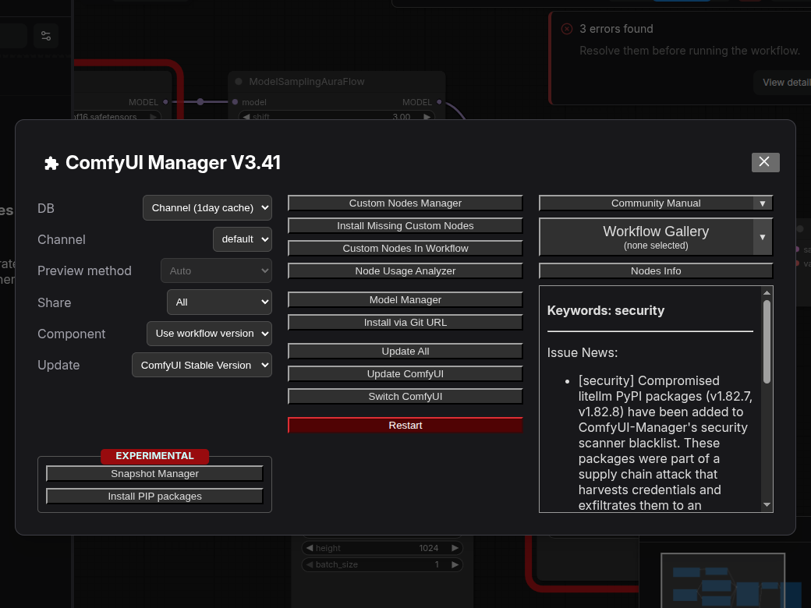
ยังไม่ต้องโหลดทั้งหมด เลือกทีละชุด ไฟล์ที่ใหญ่กว่า 20 GB ต่อไฟล์ให้หยุดถามก่อน
| โมเดล | ใช้ทำอะไร | ขนาดโดยประมาณ | ควรเริ่มเมื่อไร |
|---|---|---|---|
| Z-Image-Turbo + Qwen3 4B | กราฟเริ่มต้น Text-to-Image เร็ว | รวมราว 19 GB | งานแรก กด Download ใน Missing Models |
| SD 1.5 fp16 | ทดสอบระบบด้วยภาพเล็ก | ประมาณ 2 GB | ถ้าไม่อยากใช้ Z-Image |
| Qwen-Image-Edit 2511 | แก้ภาพด้วยข้อความ | ราว 10–20 GB | หลังสร้างภาพได้แล้ว |
| Wan2.2 TI2V-5B | ข้อความเป็นวิดีโอ และภาพเป็นวิดีโอ 720p | มัก 8–15 GB รวม VAE/T5 | หลังภาพนิ่งใช้งานได้ |
| RealESRGAN x4plus | อัปสเกลภาพ | ประมาณ 64 MB | เมื่อมีรูปแล้วอยากขยาย |
| RIFE 4.25+ | เพิ่มเฟรมวิดีโอ | สิบถึงร้อย MB | เมื่อมีคลิปสั้นแล้ว |
| FLUX.2 / LTX-2.3 มีเสียง | คุณภาพสูง หรือวิดีโอมีเสียง | มักเกิน 20 GB | ทีหลัง LTX ยังไม่พร้อมใน image นี้ |
เครื่องนี้หน่วยความจำก้อนเดียว ทั้งแชท ทั้งภาพ ทั้งวิดีโอ
stop-model ก่อนstart-qwen35 หรือ start-nemotron อีกครั้ง~/ai/comfyui/scripts/start.shdocker logs --tail 40 comfyui-dgx จนเจอบรรทัด GUIยังไม่มีไฟล์โมเดล ไม่ใช่เครื่องพัง
เป็นข้อความเท็จของ NGC PyTorch บนเครื่องนี้ ถ้า curl -s http://127.0.0.1:8188/system_stats ยังโชว์ NVIDIA GB10 ไม่ต้องติดตั้ง torch จาก PyPI
~/ai/comfyui/models หรือ outputdocker system prune เพื่อเคลียร์พื้นที่โดยไม่ดูชื่อ